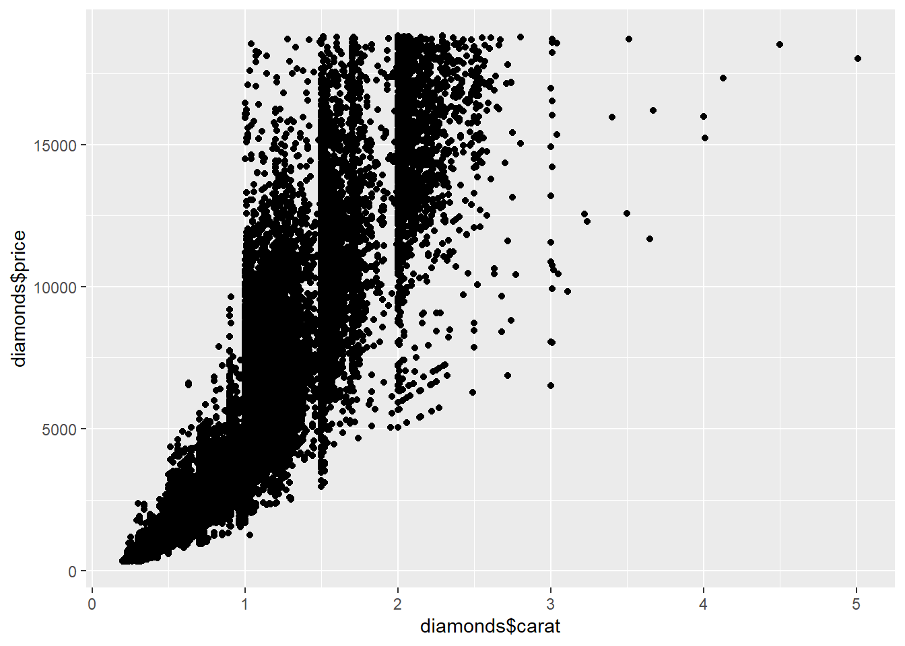

This is an exercise on using ggplot2 that was adapted by Mike Frank from the_grammar.R on http://had.co.nz/ggplot2; this was adapted for Psych 251 at Stanford and now Psych 201a at UCSD.
Install packages
library(tidyverse)
── Attaching core tidyverse packages ──────────────────────── tidyverse 2.0.0 ──
✔ dplyr 1.1.4 ✔ readr 2.1.5
✔ forcats 1.0.0 ✔ stringr 1.5.1
✔ ggplot2 3.5.1 ✔ tibble 3.2.1
✔ lubridate 1.9.3 ✔ tidyr 1.3.1
✔ purrr 1.0.2
── Conflicts ────────────────────────────────────────── tidyverse_conflicts() ──
✖ dplyr::filter() masks stats::filter()
✖ dplyr::lag() masks stats::lag()
ℹ Use the conflicted package (<http://conflicted.r-lib.org/>) to force all conflicts to become errors
library(ggthemes) # allows you to add new color themes
Exploring ggplot2 using qplot
We’ll start by using qplot. qplot is the easy interface, meant to replace plot. You can give it simple qplot(x,y) examples, or slightly more complex examples like qplot(x, y, col=grp, data=d).
We’re going to be using the diamonds dataset. This is a set of measurements of diamonds, along with their price etc.
head(diamonds)
# A tibble: 6 × 10
carat cut color clarity depth table price x y z
<dbl> <ord> <ord> <ord> <dbl> <dbl> <int> <dbl> <dbl> <dbl>
1 0.23 Ideal E SI2 61.5 55 326 3.95 3.98 2.43
2 0.21 Premium E SI1 59.8 61 326 3.89 3.84 2.31
3 0.23 Good E VS1 56.9 65 327 4.05 4.07 2.31
4 0.29 Premium I VS2 62.4 58 334 4.2 4.23 2.63
5 0.31 Good J SI2 63.3 58 335 4.34 4.35 2.75
6 0.24 Very Good J VVS2 62.8 57 336 3.94 3.96 2.48
qplot(diamonds$carat, diamonds$price)
Warning: `qplot()` was deprecated in ggplot2 3.4.0.

This allows you to make a histogram
qplot(diamonds$price)
`stat_bin()` using `bins = 30`. Pick better value with `binwidth`.
Scatter plots are trivial, and easy to add features to. The code below modifies this plot so that it uses the dataframe rather than working from variables in the general namespace (good to get away from retyping diamonds$ every time you reference a variable).
qplot(data = diamonds, price)
`stat_bin()` using `bins = 30`. Pick better value with `binwidth`.
Now you can try adding clarity and cut, using shape and color as your visual variables.
qplot(data = diamonds,x = carat, y = price, shape = clarity, color = cut)
Warning: Using shapes for an ordinal variable is not advised
Warning: The shape palette can deal with a maximum of 6 discrete values because more
than 6 becomes difficult to discriminate
ℹ you have requested 8 values. Consider specifying shapes manually if you need
that many have them.
Warning: Removed 5445 rows containing missing values or values outside the scale range
(`geom_point()`).
Cooooooooooooool!
More complex with ggplot
ggplot is just a way of building qplot calls up more systematically. It’s sometimes easier to use and sometimes a bit more complicated. What I want to show off here is the functionality of being able to build up complex plots with multiple elements. You can actually do this using qplot pretty easily, but there are a few things that are hard to do.
ggplot is the basic call, where you specify A) a dataframe and B) an aesthetic (aes) mapping from variables in the plot space to variables in the dataset.
p <-ggplot(diamonds, aes(x = carat, y = price)) # first you set the aesthetic and datasetp <- p +geom_point() # then you add geomsp <- p +geom_point(aes(colour = carat)) # and you can keep doing this to add layers to the plotp
Now you can try writing this as a single set of additions (e.g. one line of R code, though you can put in linebreaks). This is the most common workflow for me.
## Your code herep_test <-ggplot(diamonds, aes(x = carat, y = price)) +geom_point(aes(colour = carat))p_test
Facets
Let’s try out another version of the qplot example above. Here’s the last qplot example now done ggplot.
ggplot( diamonds,aes(x = carat, y = price,shape = clarity, color = cut )) +geom_point()
Warning: Using shapes for an ordinal variable is not advised
Warning: The shape palette can deal with a maximum of 6 discrete values because more
than 6 becomes difficult to discriminate
ℹ you have requested 8 values. Consider specifying shapes manually if you need
that many have them.
Warning: Removed 5445 rows containing missing values or values outside the scale range
(`geom_point()`).
One of the primary benefits of ggplot2 is the use of facets - also known as small multiples in the Tufte vocabulary. That last plot was probably hard to read. Facets could make it better. Try adding facet_grid(x ~ y). x ~ y means row facets are by x, column facets by y.
## YOUR CODE HEREggplot( diamonds,aes(x = carat, y = price,shape = clarity, color = cut )) +geom_point() +facet_grid(clarity ~ cut)
Warning: Using shapes for an ordinal variable is not advised
Warning: The shape palette can deal with a maximum of 6 discrete values because more
than 6 becomes difficult to discriminate
ℹ you have requested 8 values. Consider specifying shapes manually if you need
that many have them.
Warning: Removed 5445 rows containing missing values or values outside the scale range
(`geom_point()`).
But facets can also get overwhelming. Try to strike a good balance between color, shape, and faceting.
HINT: facet_grid(. ~ x) puts x on the columns, but facet_wrap(~ x) (no dot) wraps the facets.
ggplot( diamonds,aes(x = carat, y = price,shape = clarity, color = cut )) +geom_point() +facet_wrap(~ clarity)
Warning: Using shapes for an ordinal variable is not advised
Warning: The shape palette can deal with a maximum of 6 discrete values because more
than 6 becomes difficult to discriminate
ℹ you have requested 8 values. Consider specifying shapes manually if you need
that many have them.
Warning: Removed 5445 rows containing missing values or values outside the scale range
(`geom_point()`).
Geoms
As you’ve seen above, the basic unit of a ggplot plot is a “geom” - a mapping between data (via an “aesthetic”) and a particular geometric configuration on coordinate axes.
Let’s try adding some geoms and manipulating their parameters. One combo I really like is a scatterplot with a smoothing layer (geom_smooth). Try adding one onto this plot.
`geom_smooth()` using method = 'gam' and formula = 'y ~ s(x, bs = "cs")'
Warning: Failed to fit group -1.
Caused by error in `smooth.construct.cr.smooth.spec()`:
! x has insufficient unique values to support 10 knots: reduce k.
## ADD TO THIS PLOT WITH YOUR CODE HERE
CHALLENGE: You could also try starting with a histogram and adding densities. (geom_density), Try this link.
Warning: The dot-dot notation (`..density..`) was deprecated in ggplot2 3.4.0.
ℹ Please use `after_stat(density)` instead.
Warning in stat_function(fun = dnorm, args = list(mean = mean(diamonds$price), : All aesthetics have length 1, but the data has 53940 rows.
ℹ Please consider using `annotate()` or provide this layer with data containing
a single row.
Themes and plot cleanup
I like a slightly cleaner look to my plots. Luckily, ggplot allows you to add “themes” to your plots. Try doing the same plot but adding + theme_bw() or + theme_classic(). Different themes work better for different applications, in my experience. My favorite right now is ggthemes::theme_few.
You can also try different color scales. Experiment with scale_color_... - try writing that and hitting TAB for autocomplete options. Check out the help on this.
You can also try transparency/different point sizes to clean up scatterplots. Try alpha = .1 or pch = "." to make transparent or small points.
Finally, don’t forget to “fix the axis labels”!
Here’s a somewhat ugly plot - see if you can make it look awesome.
## YOUR CODE HERE -- no "correct" answer, just play around with making it look betterggplot(diamonds, aes(x = carat, y = price,col = cut)) +geom_point(alpha =0.3, pch="$") +facet_wrap(~clarity) +scale_color_wsj() +theme_wsj() +labs(title ="Diamond Price vs. Carat by Clarity and Cut",x ="Carat",y ="Price (USD)" )
# Change facets, transparency, fix axis labels, etc.